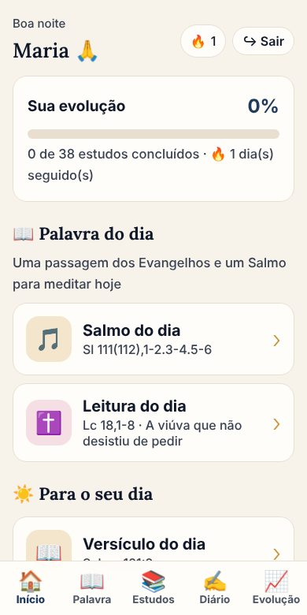
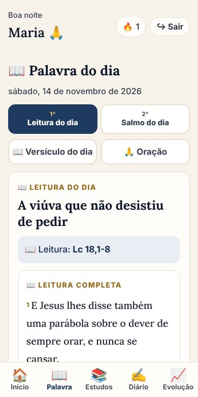
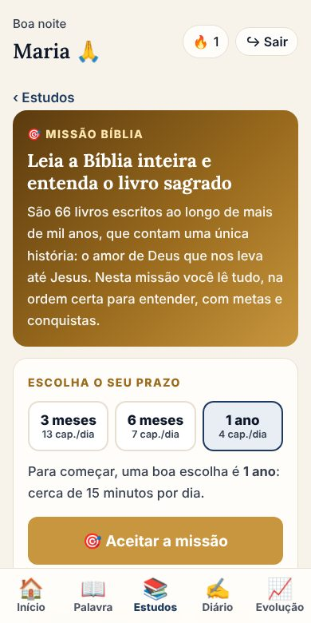
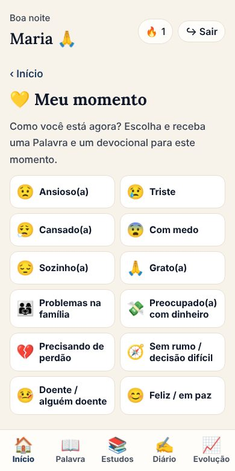
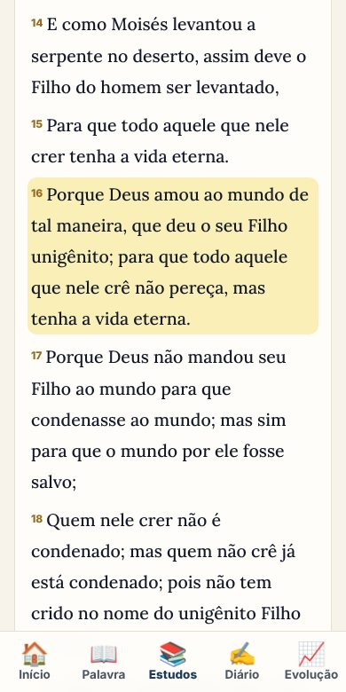

Responda 5 perguntas rápidas. No final, você recebe um plano de 15 minutos por dia feito para o seu momento.
Para católicos e evangélicos: a Palavra do dia com meditação guiada, a Bíblia completa comentada e devocionais para os seus momentos difíceis. Tudo no seu celular, sem baixar nada.

Você abre a Bíblia com vontade. Lê um pedaço, não entende direito e fecha. No outro dia, esquece.
À noite, a cabeça não desliga. É conta, é família, é preocupação com o amanhã.
Você sabe que a Palavra traz paz. Só falta um caminho simples para seguir todo dia.
“Eu não preciso de mais uma obrigação. Preciso de alguém que me mostre por onde começar.”
Foi pensando exatamente nisso que o Diário Bíblico da Paz foi criado.




Arraste para o lado para ver as telas →
Uma passagem dos Evangelhos e um Salmo com o texto completo e explicado, todos os dias.
Um caminho simples para orar com a Palavra, mesmo sem experiência.
O app se adapta à sua caminhada de fé. Quem é católico vê também a Liturgia diária completa.
Os 66 livros, com explicação de cada livro: quem escreveu, quando e qual a mensagem.
Leia a Bíblia inteira com prazo, metas, níveis e a contagem de dias que faltam.
Bíblia em 1 ano, Novo Testamento em 90 dias e Evangelhos em 30 dias, com cronograma pronto.
Ansiedade, tristeza, cansaço, medo, problemas em casa: escolha como está e receba uma Palavra para hoje.
Respiração guiada com versículos, para os momentos em que o coração dispara.
7 encontros para fazer a dois, com pergunta para conversar e desafio do casal.
Histórias bíblicas com perguntas e atividades por idade, para fazer com seus filhos.
Pinte versículos, coloque etiquetas, escreva o que Deus falou com você e anexe fotos.
Registre pedidos e orações respondidas, e acompanhe sua constância no calendário.
Toque no plano que você prefere. Os dois liberam o app completo.
Quero o plano anual · R$ 97acesso liberado logo após o pagamentoUse o app por 7 dias. Se não gostar, peça o reembolso e devolvemos 100% do valor, sem perguntas.
Não. O app abre pelo navegador do celular. Você pode colocar um atalho na tela inicial e ele fica igual a um aplicativo.
Sim. Funciona em qualquer celular, tablet ou computador com internet.
Logo após o pagamento você recebe o link de acesso no e-mail da compra.
Sim. O app foi feito para quem não sabe por onde começar: explica cada livro e diz exatamente o que ler a cada dia.
Para os dois. No primeiro acesso você diz qual é a sua caminhada de fé e o app se adapta a você. Quem é católico vê também a Liturgia diária completa. A Bíblia, os devocionais e os planos de leitura servem para qualquer cristão.
De 10 a 15 minutos já fazem diferença. Você escolhe o seu ritmo.
O plano anual sai por R$ 97 no ano, o equivalente a R$ 8,08 por mês. O mensal custa R$ 19,90 e pode ser cancelado quando quiser. Os dois liberam exatamente o mesmo app completo.
Sim. Sem multa e sem burocracia. E nos primeiros 7 dias você tem garantia de reembolso total.
O app é um apoio espiritual e não substitui o acompanhamento de médicos ou psicólogos. Se precisar, procure ajuda profissional. Em crise, ligue 188 (CVV).